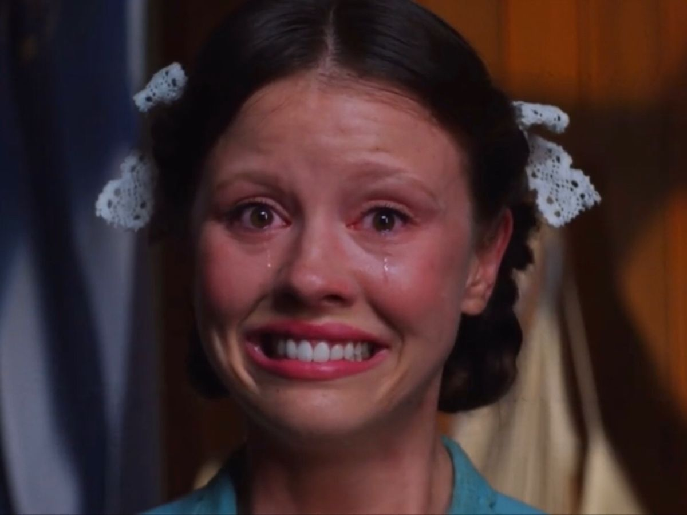

hell isn’t a place - it’s the echo of your own complaints

trust me when i say this: the best thing you can do to ruin your life - and every dream you’ve ever had - is to complain. complain a lot, and the hope for a peaceful life vanishes instantly. i realized the most terrible moments i’ve ever lived were born from my own seeds of hatred and complaint - not always verbal (though that too), but mostly mental rumination. everything i saw or felt was tinted with negativity and despair. i think it has something to do with the lack of faith - and i don’t mean faith in some higher god, but faith in yourself. Which might actually be worse… because i deeply believe you are the higher power, then you’re also the one responsible for your own damnation.
the truth hurts, but it’s freeing. and the hardest truths to accept are always the ones that transform us the most. i used to think we should “embrace who we are,” but that only made me more bitter. maybe what you really need - just maybe, but almost always - is to stop being yourself. not everyone grows up surrounded by love and positivity, and if you didn’t, it’s crucial to realize it as soon as possible. from that point on, it becomes your responsibility - to heal and to reinvent yourself.